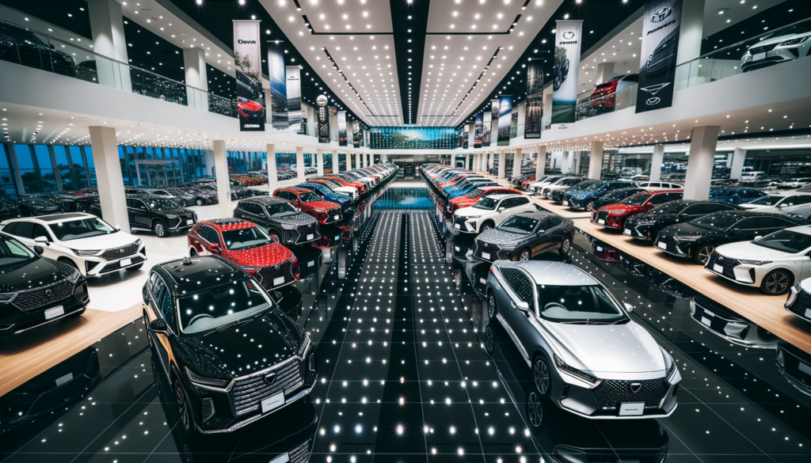

Leisure Motors orginally had two owners in 2001 but since 2009,the company has gained two more ownners. Services provided at Leisure Motors today is renting and purchase of cars. Because of their love for cars, as soon as they had enough capital,in 2001 Ts'ele Macheli and Letlotlo Motsoikha started their company since there was a growing demand for renting. The company soon took of after that as a plethora of people rented cars because it was cheaper to rent cars at the time than purchase them. After a few years the two owners wanted to expand the company and make it a renting and purchasing company. Two more people Reauboka Matsoso and Tsoanelo Maketela became part owners when the company was finished with their expantion and the company was reopened . Since 2009, at Leisure Motors you can now rent and purchase available cars. At Leisure Motors you can rent cars for different events,trips,vacations and more, as well as buying exclusive cars models of your choice.
Rent our affordable cars for different occassions.
 Take a pick at your favorite cars, test drive and take them home with you.